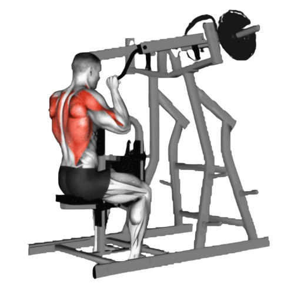
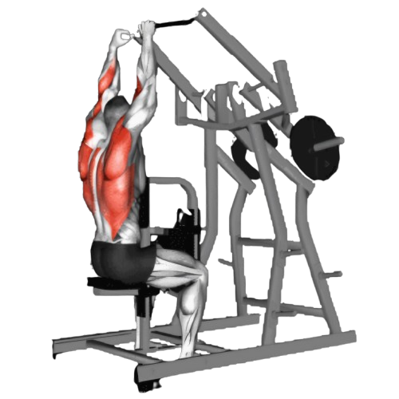

플레이트 래터럴 풀다운

- 양손으로 플레이트를 잡는다. 팔이 바닥과 수평을 이루도록 약간 굽힌 상태에서 시작한다.
- 팔꿈치를 몸통 쪽으로 끌어당기며 플레이트를 내려 당긴다. 이때 등 근육을 사용하여 당기는 것이 중요하며, 팔만으로 운동하지 않도록 주의한다.
- 바를 당긴 상태에서 1~2초간 정지하며, 등 근육을 최대한 수축한다.
- 이때 호흡은 뱉는다.
- 천천히 플레이트를 원래 위치로 되돌리며 시작 자세로 돌아온다.
- 이때 호흡은 마신다.

주의사항
- 운동 시 허리가 과도하게 구부러지거나 어깨가 올라가지 않도록 주의한다. 팔꿈치를 몸 쪽으로 당기면서 상체가 움직이지 않도록 안정된 자세를 유지해야 한다.
- 지나치게 무거운 중량은 잘못된 자세를 유발할 수 있어 부상의 원인이 된다.
운동부위 및 효과
- 광배근, 승모근, 대원근, 이두근, 전완근, 후면 삼각근
- 측면에서 당기는 동작을 통해 광배근과 대원근을 효과적으로 자극하여 등 근육의 두께를 향상시킬 수 있다.